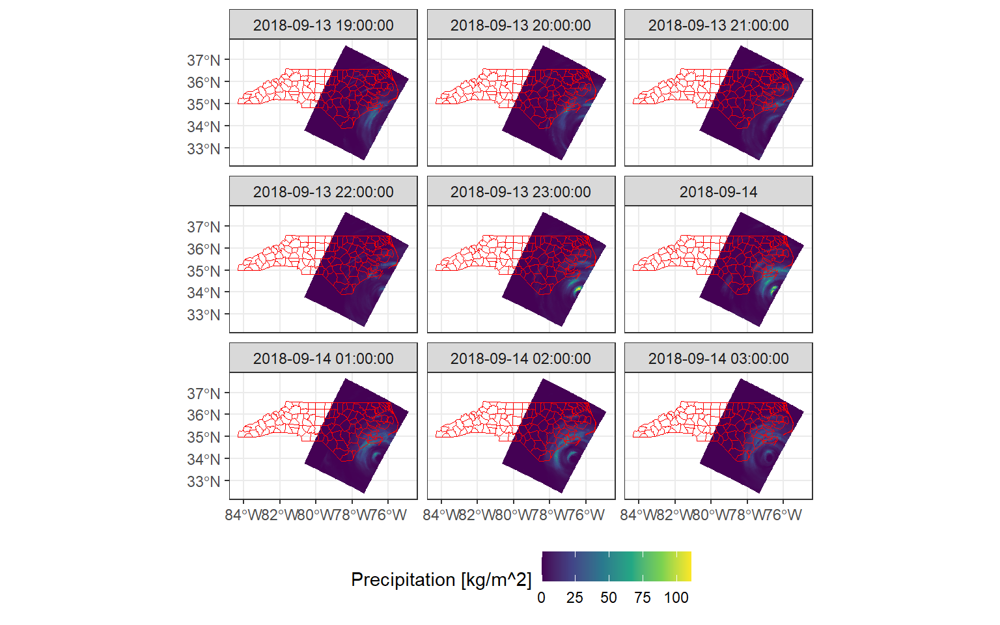
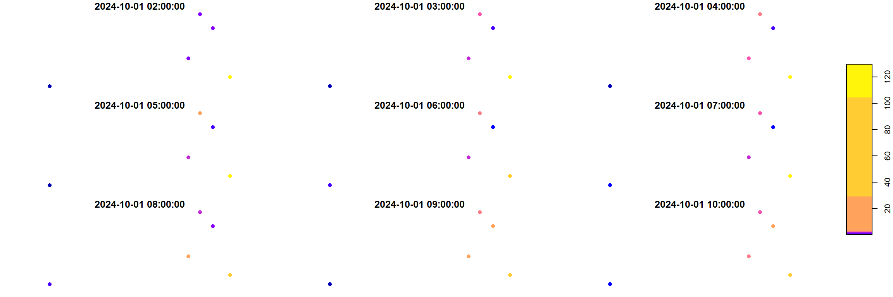
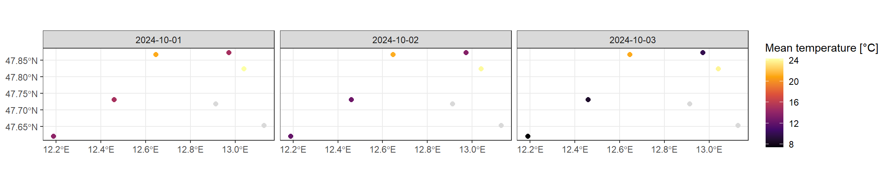
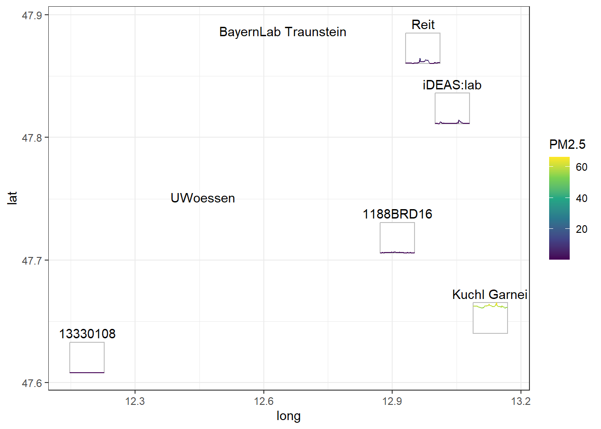

![]()
library(cubble)
library(glue)
library(here)
if(!require(post)) remotes::install_github("loreabad6/post")
library(post)
library(sf)
library(stars)
library(tidyverse)
library(units)BEGIN seminar
If you are here, it is very likely you attended the BEGIN seminar from the University of St. Andrews today. Thank you for stopping by! üíê
I was invited by Dr. Fernando Benitez (thank you so much for considering me!) to give a talk on a topic I am working on, so I decided to talk about vector data cubes üòä. This post compliments the talk by writing out what I discussed during the seminar and by providing the code to reproduce some of the work I showed.
Here are the slides of my talk today:
And over here I will load some of the libraries I use for the next sections.
Data cubes
Data cubes are ideal data structures for multidimensional data. Think of data with spatiotemporal properties such as satellite image time series (SITS). If you work with SITS you might already be familiar with data cubes, as Earth system data cubes have received quite some attention lately (Mahecha et al. 2020).

Tools and initiatives like Google Earth Engine, OpenEO and Digital Earth Africa are using data cubes as their core for SITS analysis.
Organizing SITS in data cubes is intuitive and logical given that satellite images have consistent X/Y coordinates per pixel, and any reacquisition over time keeps the same X/Y coordinates. Here we already identify three dimensions: X, Y and time. Satellite images also have bands and we can then consider those as a fourth dimension.
I wrote a post almost a year ago on how to create on-demand data cubes with STAC with R and Python.
Vector data cubes
To quote Pebesma and Bivand (2023) at the very start of the Data Cubes Chapter:
“Data cubes arise naturally when we observe properties of a set of geometries repeatedly over time”.
Clearly satellite images for this description, being X and Y said “geometry”. But how other type of data like meteorological station data? They are also located in a X and Y location on Earth, represented by a POINT geometry. Stations collect data at constant time intervals, giving them a temporal dimension. Further, they can collect data on different type of phenomena, such as temperature, humidity, etc. So in essence, station data is multidimensional data that can be represented as a data cube. In this case, a vector data cube (VDCs).

If you are familiar with databases, you will find that the concept of a vector data cube aligns greatly with an OLAP cube model.
Another “naturally occurring” VDC case is when data from a raster or Earth system data cube is aggregated onto vector geometries. This vector geometries can be for example, political boundaries. The {stars} package has a great example of aggregation of precipitation data over the North Carolina counties right here. This is a sneak peek:
Code
# Load precipitation data
precipitation = system.file("nc/test_stageiv_xyt.nc", package = "stars") |>
read_stars()
# Load North Carolina data
nc = system.file("gpkg/nc.gpkg", package = "sf") |>
read_sf() |>
# Transform CRS to match precipitation data cube
st_transform(st_crs(precipitation))
# Aggregate precipitation data over NC counties
precipitation_nc = aggregate(precipitation, by = nc, FUN = max)
# Plot raster data cube
ggplot() +
geom_stars(data = precipitation[,,,1:9]) +
scale_fill_viridis_c("Precipitation [kg/m^2]") +
geom_sf(data = nc, fill = NA, color = "red") +
facet_wrap("time", ncol = 3) +
theme_bw() +
theme(legend.position = "bottom")
# Plot vector data cube
ggplot() +
geom_stars(
data = precipitation_nc[,,1:9]
) +
geom_sf(data = nc, fill = NA, color = "white") +
scale_fill_viridis_c(
"Precipitation [kg/m^2]",
na.value = "grey85"
) +
facet_wrap(~time, nrow = 3) +
theme_bw() +
theme(legend.position = "bottom")
Exploring VDCs with R
If you do a search for “vector data cubes R”, it is very likely that your first result is the {stars} package. As its name says, {stars} supports “spatiotemporal arrays, rasters, and vector data cubes”.
{stars} pioneered vector data cube implementations in current spatial data science languages. Further efforts in Python with the package {xvec} are inspired by initial development in {stars}.
{stars} takes advantage of base R’s support for matrices and arrays to implement common data cube operations such as slicing (filtering), reducing (aggregating), and applying functions to dimensions.
Typically, data cubes are represented as multidimensional arrays given their capacity to support exactly that, multiple dimensions. However, when only looking at spatio-temporal data, I also use the {cubble} package that implements “a vector spatiotemporal data structure for data analysis” (Zhang et al. 2022).
{stars} and {cubble} interact very well when the data cube consists of space and time dimensions.
To showcase this interaction I will make use of some data from the openSenseMap project and build what I call array and tabular data cubes.
openSenseMap.org has the vision to become “the Wikipedia for environmental data in order to awaken and promote education, environmental and climate protection, enthusiasm for STEM, citizen science, open data and open source.”
You can donate to their cause here.
Fetching the data
The openSenseMap project provides an API to query the information from the sensors shared on their website.
I queried the API to obtain some data from sensors close to the city where I am based, Salzburg. You can unfold the code below to see how I queried the API and pre-processed the data so that you know how to do this for other areas. However, I saved the result of the querying and pre-processing to avoid exhausting the API. The data is copyrighted as © senseBox 2014 - 2020.
Code
## parameters
bboxsbg = glue_collapse(c(12,47.5,13.5,47.9), sep = ",")
from = "2024-10-01T00:00:00Z"
to = "2024-10-03T00:00:00Z"
op = "arithmeticMean"
win = "1h"
format = "tidy"
cols = glue_collapse(c("boxId","boxName","lat","lon","phenomenon","unit"), sep = ",")
## api query
query = function(phenomenon) {
glue("https://api.opensensemap.org/statistics/descriptive?bbox={bboxsbg}&from-date={from}&to-date={to}&phenomenon={phenomenon}&operation={op}&columns={cols}&window={win}&format={format}")
}
## fetch data
temperature = read_csv(query("Temperatur"))
pm10 = read_csv(query("PM10"))
pm25 = read_csv(query("PM2.5"))
## check if data is complete, if not, complete cases
dim(temperature)
dim(pm10)
dim(pm25)
temperature_comp = temperature |>
complete(
nesting(boxName, lon, lat), time_start,
nesting(phenomenon, unit)
)
# merge data into one file and complete cases for all stations
opensense = bind_rows(temperature_comp, pm10, pm25) |>
select(-sensorId, -boxId) |>
complete(
nesting(boxName, lon, lat, time_start),
nesting(phenomenon, unit)
) |>
st_as_sf(coords = c("lon", "lat")) |>
st_set_crs(4326)
write_sf("data/opensensemap.gpkg")To read in the saved data, we can use the {sf} package.
(opensense = read_sf("data/opensensemap.gpkg"))Simple feature collection with 1050 features and 5 fields
Geometry type: POINT
Dimension: XY
Bounding box: xmin: 12.18844 ymin: 47.62055 xmax: 13.12862 ymax: 47.8726
Geodetic CRS: WGS 84
# A tibble: 1,050 × 6
boxName time_start phenomenon unit arithmeticMean_1h
<chr> <dttm> <chr> <chr> <dbl>
1 1188BRD16 2024-10-01 02:00:00 PM10 µg/m³ 1.35
2 1188BRD16 2024-10-01 02:00:00 PM2.5 µg/m³ 0.754
3 1188BRD16 2024-10-01 02:00:00 Temperatur °C NA
4 1188BRD16 2024-10-01 03:00:00 PM10 µg/m³ 1.60
5 1188BRD16 2024-10-01 03:00:00 PM2.5 µg/m³ 0.707
6 1188BRD16 2024-10-01 03:00:00 Temperatur °C NA
7 1188BRD16 2024-10-01 04:00:00 PM10 µg/m³ 2.05
8 1188BRD16 2024-10-01 04:00:00 PM2.5 µg/m³ 0.885
9 1188BRD16 2024-10-01 04:00:00 Temperatur °C NA
10 1188BRD16 2024-10-01 05:00:00 PM10 µg/m³ 1.70
# ℹ 1,040 more rows
# ℹ 1 more variable: geom <POINT [°]># (opensense = read_sf("posts/2024-10-14-lets-cube-those-geoms/data/opensensemap.gpkg"))As you can notice, the data has several data duplicates, since it is presented in a long format. In this way each row contains the station name (boxName), the timestamp (time_start) and the parameter measured (phenomenon). Each station also has a POINT geometry and each measurement has its corresponding unit.
The measured values (arithmeticMean_1h) are the only changing variables. This value, as can be seen on the query code, is the arithmetic mean per hour of the observations for temperature, PM2.5 and PM10 for the sensors in the bounding box given. Not every sensor measures all the values and therefore there are NAs within the data.
sum(is.na(opensense$arithmeticMean_1h))[1] 301That is a lot of empty data! The reason to introduce so many NAs is that to create an array, we need that every dimension has an equal number of entries.
Creating a VDC with {stars}
Although creating a raster data cube from SITS data is pretty straightforward in {stars}, creating a VDC requires a bit more pre-processing.
However, when creating a VDC from scratch we get to understand better how stars objects are structured.
“
{stars}provides infrastructure for data cubes, array data with labeled dimensions”.
So, we start with the dimensions.
“A
dimensionsobject is a named list of dimension elements, each describing the semantics a dimension of the data arrays (space, time, type etc).”
First, we identify the dimensions in the opensense object. We have a geometry (geom) that identifies and locates each station in space and we have a timestamp (time_start) that marks the temporal dimension. The point parameter indicates if the dimension has point support (point = TRUE in the case of our geom) or if it is a period (point = FALSE in the case of our time_start).
(d = st_dimensions(
geom = st_sfc(unique(opensense$geom), crs = st_crs(opensense)),
time = unique(opensense$time_start),
point = c(TRUE, FALSE)
)) from to offset delta refsys point
geom 1 7 NA NA WGS 84 TRUE
time 1 50 2024-10-01 02:00:00 CEST 1 hours POSIXct FALSE
values
geom POINT (12.91207 47.71819),...,POINT (12.45901 47.73125)
time NULLTake a moment to check the output of this dimensions object. We have established the semantics of the data array dimensions. With this we guarantee that there are 7 stations and 50 timestamps. The geom dimension, that contains the geometries of the 7 stations have a CRS (WGS84), have point support and we can see a glimpse of the POINT geometries under the values column.
The time dimension on the other hand starts with index 1 and finishes at index 50. The offset indicated the first time index, while the delta contains the information on the frequency of the temporal data, in this case, 1 hour. We set this as a period, since it is an aggregation of all the values obtained in that hour. The values column is empty since the offset and delta can save all the needed information. Don’t worry your data is still there!
st_get_dimension_values(d, "geom")Geometry set for 7 features
Geometry type: POINT
Dimension: XY
Bounding box: xmin: 12.18844 ymin: 47.62055 xmax: 13.12862 ymax: 47.8726
Geodetic CRS: WGS 84
First 5 geometries:POINT (12.91207 47.71819)POINT (12.18844 47.62055)POINT (12.64558 47.86673)POINT (13.03966 47.82361)POINT (13.12862 47.65276)st_get_dimension_values(d, "time") [1] "2024-10-01 02:00:00 CEST" "2024-10-01 03:00:00 CEST"
[3] "2024-10-01 04:00:00 CEST" "2024-10-01 05:00:00 CEST"
[5] "2024-10-01 06:00:00 CEST" "2024-10-01 07:00:00 CEST"
[7] "2024-10-01 08:00:00 CEST" "2024-10-01 09:00:00 CEST"
[9] "2024-10-01 10:00:00 CEST" "2024-10-01 11:00:00 CEST"
[11] "2024-10-01 12:00:00 CEST" "2024-10-01 13:00:00 CEST"
[13] "2024-10-01 14:00:00 CEST" "2024-10-01 15:00:00 CEST"
[15] "2024-10-01 16:00:00 CEST" "2024-10-01 17:00:00 CEST"
[17] "2024-10-01 18:00:00 CEST" "2024-10-01 19:00:00 CEST"
[19] "2024-10-01 20:00:00 CEST" "2024-10-01 21:00:00 CEST"
[21] "2024-10-01 22:00:00 CEST" "2024-10-01 23:00:00 CEST"
[23] "2024-10-02 00:00:00 CEST" "2024-10-02 01:00:00 CEST"
[25] "2024-10-02 02:00:00 CEST" "2024-10-02 03:00:00 CEST"
[27] "2024-10-02 04:00:00 CEST" "2024-10-02 05:00:00 CEST"
[29] "2024-10-02 06:00:00 CEST" "2024-10-02 07:00:00 CEST"
[31] "2024-10-02 08:00:00 CEST" "2024-10-02 09:00:00 CEST"
[33] "2024-10-02 10:00:00 CEST" "2024-10-02 11:00:00 CEST"
[35] "2024-10-02 12:00:00 CEST" "2024-10-02 13:00:00 CEST"
[37] "2024-10-02 14:00:00 CEST" "2024-10-02 15:00:00 CEST"
[39] "2024-10-02 16:00:00 CEST" "2024-10-02 17:00:00 CEST"
[41] "2024-10-02 18:00:00 CEST" "2024-10-02 19:00:00 CEST"
[43] "2024-10-02 20:00:00 CEST" "2024-10-02 21:00:00 CEST"
[45] "2024-10-02 22:00:00 CEST" "2024-10-02 23:00:00 CEST"
[47] "2024-10-03 00:00:00 CEST" "2024-10-03 01:00:00 CEST"
[49] "2024-10-03 02:00:00 CEST" "2024-10-03 03:00:00 CEST"Now, let’s focus on the array data.
“
starsobjects consist of a (possibly empty) named list of arrays, each having named dimensions (dim) attribute”.
To create an array in R we need to establish the maximal indices in each dimension. As we did above when building the dimensions object, we create now a vector with the dimensions in which we will arrange the array data.
dims = c(
length(unique(opensense$boxName)),
length(unique(opensense$time_start))
)The order in which the data is assigned to each element in an array is important. Normally, arrays are assigned in a per column basis. For this, we order our data first by the last set dimension (time) and then by the first one (station geom).
opensense = opensense[order(opensense[["time_start"]],opensense[["boxName"]]), ]And now we create the arrays to pass onto the stars object during creation. We create one array per parameter. For that we filter the data to the corresponding phenomenon. Then we extract the measured values and pass them onto the array() function, assigning the dims object created above. Finally, we pass the units to the array for each parameter.
Instead of creating the three arrays, we can also create a third dimension for the parameters.
# Create temperature array
temp = filter(opensense, phenomenon == "Temperatur")
temp_arr = array(temp$arithmeticMean_1h, dim = dims)
units(temp_arr) = as_units(unique(temp$unit))
# Create PM2.5 array
pm25 = filter(opensense, phenomenon == "PM2.5")
pm25_arr = array(pm25$arithmeticMean_1h, dim = dims)
units(pm25_arr) = as_units(unique(pm25$unit))
# Create PM10 array
pm10 = filter(opensense, phenomenon == "PM10")
pm10_arr = array(pm10$arithmeticMean_1h, dim = dims)
units(pm10_arr) = as_units(unique(pm10$unit))And with that, we can create our VDC using {stars}.
(opensense_stars = st_as_stars(
temperature = temp_arr,
`PM2.5` = pm25_arr,
PM10 = pm10_arr,
d
))stars object with 2 dimensions and 3 attributes
attribute(s):
Min. 1st Qu. Median Mean 3rd Qu. Max.
temperature [°C] 6.65000000 12.7511667 15.514167 17.01426 21.291500 24.56083
PM2.5 [µg/m³] 0.04090909 0.6726201 1.324079 12.93712 4.611875 66.39458
PM10 [µg/m³] 0.04227273 1.1006522 2.612205 24.76510 8.095625 149.11708
NA's
temperature [°C] 101
PM2.5 [µg/m³] 100
PM10 [µg/m³] 100
dimension(s):
from to offset delta refsys point
geom 1 7 NA NA WGS 84 TRUE
time 1 50 2024-10-01 02:00:00 CEST 1 hours POSIXct FALSE
values
geom POINT (12.91207 47.71819),...,POINT (12.45901 47.73125)
time NULLNote how the units for each parameter are also recognized, and how we can get a quick glimpse of the summary statistics for each one.
One thing I always find challenging is passing the arrays in the correct order. When building your own cube, make sure to double check that the original data is assigned to the correct dimensions!
Cube operations
We can take a small peek at how the PM10 data looks like for example. For this we can do some subsetting of our data cube using [.
The first element corresponds to the attributes, so here we call the PM10 attribute. The second element is the geom dimension. We want to keep all the stations, so we keep it as it is. Finally, the last element is the time dimension. I took a subset from the first to the ninth hour (to avoid plotting 50 hours of data but also to show you how to subset üòâ).
You find here a glimpse of the operations you can run in a data cube with {stars}. Take a look at the package vignettes and the Spatial Data Science book for a more comprehensive overview.
plot(opensense_stars["PM10",,1:9], pch = 16)
Another interesting operation is to convert attributes to dimensions (with merge()) and vice-versa (with split()). This is helpful when specific subsetting over the dimension is desired, or if a function should be applied over set dimension.
opensense_stars |>
drop_units() |>
merge(name = "parameter")stars object with 3 dimensions and 1 attribute
attribute(s):
Min. 1st Qu. Median Mean 3rd Qu. Max.
temperature.PM2.5.PM10 0.04090909 1.213 6.16875 18.24046 20.937 149.1171
NA's
temperature.PM2.5.PM10 301
dimension(s):
from to offset delta refsys point
geom 1 7 NA NA WGS 84 TRUE
time 1 50 2024-10-01 02:00:00 CEST 1 hours POSIXct FALSE
parameter 1 3 NA NA NA NA
values
geom POINT (12.91207 47.71819),...,POINT (12.45901 47.73125)
time NULL
parameter temperature, PM2.5 , PM10 Another strong operation in data cubes is the ability to aggregate dimensions to larger units, applying functions for this aggregation. Here for instance, we aggregate the data to a daily mean.
(opensense_daily = opensense_stars |>
aggregate("1 day", mean, na.rm = TRUE))stars object with 2 dimensions and 3 attributes
attribute(s):
Min. 1st Qu. Median Mean 3rd Qu. Max. NA's
temperature 7.44366667 12.3646661 14.953905 16.28129 21.175726 24.31992 6
PM2.5 0.09045043 0.8438253 1.379532 12.68583 2.960180 59.37775 6
PM10 0.32679965 1.5753369 3.370038 25.86702 6.251683 132.59654 6
dimension(s):
from to offset delta refsys point
time 1 3 2024-10-01 CEST 1 days POSIXct NA
geom 1 7 NA NA WGS 84 TRUE
values
time NULL
geom POINT (12.91207 47.71819),...,POINT (12.45901 47.73125)Code
# for some reason the aggregation step is not recognized
# by geom_stars so I converted the stars object to a long
# sf and used geom_sf instead
ggplot(drop_units(st_as_sf(opensense_daily, long = TRUE))) +
geom_sf(aes(color = temperature), size = 2) +
scale_color_viridis_c(
"Mean temperature [°C]",
na.value = "grey85", option = "inferno"
) +
facet_wrap(~time, ncol = 3) +
theme_bw()
Several other operations can be performed using vector data cubes. Check the annotations on the margins for more content!
Converting to {cubble}
We can directly convert our stars object into a cubble. We will use a couple of tricks to do so.
A cubble requires a key which is the spatial identifier, and an index which is the temporal identifier. The index is quite straightforward since we can pass the time dimension directly. Passing a geometry as a key, however, is not well supported yet, and therefore we use the trick of calling an “id” dimension. This works because during coercion from a stars object {cubble} creates an internal id column to identify each spatial element. This might change, but for now it is the workaround we can take advantage of.
opensense_cubble = opensense_stars |>
as_cubble(key = id, index = time)Learn more about cubble data structure here.

{cubble}{cubble} organizes spatiotemporal data in two faces, a nested cubble represents the temporal face, and a long cubble holds the time series. One can pivot back and forth from either face using the face_spatial() and face_temporal() functions.
opensense_cubble |> face_spatial()ℹ The cubble is already in the nested form# cubble: key: id [7], index: time, nested form, [sf]
# spatial: [12.19, 47.62, 13.13, 47.87], WGS 84
# temporal: time [dttm], temperature [[°C]], PM2.5 [[µg/m³]], PM10 [[µg/m³]]
id long lat geom ts
* <int> <dbl> <dbl> <POINT [°]> <list>
1 1 12.9 47.7 (12.91207 47.71819) <tibble [50 × 4]>
2 2 12.2 47.6 (12.18844 47.62055) <tibble [50 × 4]>
3 3 12.6 47.9 (12.64558 47.86673) <tibble [50 × 4]>
4 4 13.0 47.8 (13.03966 47.82361) <tibble [50 × 4]>
5 5 13.1 47.7 (13.12862 47.65276) <tibble [50 × 4]>
6 6 13.0 47.9 (12.97138 47.8726) <tibble [50 × 4]>
7 7 12.5 47.7 (12.45901 47.73125) <tibble [50 × 4]>opensense_cubble |> face_temporal()# cubble: key: id [7], index: time, long form
# temporal: 2024-10-01 02:00:00 -- 2024-10-03 03:00:00 [1h], no gaps
# spatial: long [dbl], lat [dbl], geom [POINT [°]]
id time temperature PM2.5 PM10
<int> <dttm> [°C] [µg/m³] [µg/m³]
1 1 2024-10-01 02:00:00 NA 0.754 1.35
2 1 2024-10-01 03:00:00 NA 0.707 1.60
3 1 2024-10-01 04:00:00 NA 0.885 2.05
4 1 2024-10-01 05:00:00 NA 0.841 1.70
5 1 2024-10-01 06:00:00 NA 0.878 1.57
6 1 2024-10-01 07:00:00 NA 0.8 1.61
7 1 2024-10-01 08:00:00 NA 1.79 3.87
8 1 2024-10-01 09:00:00 NA 1.15 3.41
9 1 2024-10-01 10:00:00 NA 1.09 2.44
10 1 2024-10-01 11:00:00 NA 0.865 2.06
# ℹ 340 more rowsOne strong point for {cubble} when dealing with spatiotemporal data is that there is no need any more to have an even number of observations as with an array.
If we create a cubble from our original opensense data, this becomes clearer:
opensense |>
drop_na(arithmeticMean_1h) |>
select(-unit) |>
pivot_wider(names_from = phenomenon, values_from = arithmeticMean_1h) |>
as_cubble(key = boxName, index = time_start)# cubble: key: boxName [7], index: time_start, nested form, [sf]
# spatial: [12.19, 47.62, 13.13, 47.87], WGS 84
# temporal: time_start [dttm], PM10 [dbl], PM2.5 [dbl], Temperatur [dbl]
boxName long lat geom ts
* <chr> <dbl> <dbl> <POINT [°]> <list>
1 1188BRD16 12.9 47.7 (12.91207 47.71819) <tibble [50 × 4]>
2 13330108 12.2 47.6 (12.18844 47.62055) <tibble [50 × 4]>
3 BayernLab Traunstein 12.6 47.9 (12.64558 47.86673) <tibble [49 × 4]>
4 iDEAS:lab 13.0 47.8 (13.03966 47.82361) <tibble [50 × 4]>
5 Kuchl Garnei 13.1 47.7 (13.12862 47.65276) <tibble [50 × 4]>
6 Reit 13.0 47.9 (12.97138 47.8726) <tibble [50 × 4]>
7 UWoessen 12.5 47.7 (12.45901 47.73125) <tibble [50 × 4]>Note the information under the ts column. You can now see there that the number of observations logged for each station is unequal.
cubble has many interesting functions, but one of the highlights for me is the ability to create glyph maps. A glyph map allows you to understand the temporal dynamics of your data, while also considering their location in space.

Check out more about this really interesting package and follow its development here: https://huizezhang-sherry.github.io/cubble/
Code
# bring back station names
boxnames = select(opensense, boxName) |> distinct()
opensense_cubble = opensense_cubble |>
st_join(boxnames)
# unfold the necessary data in the temporal cube to plot
opensense_unf = opensense_cubble |>
face_temporal() |>
unfold(boxName, long, lat) |>
drop_units()
# glyph plot
ggplot(opensense_unf) +
aes(x_major = long, x_minor = time,
y_major = lat, y_minor = `PM2.5`) +
geom_glyph_box(width = 0.08, height = 0.025) +
geom_glyph(aes(color = `PM2.5`), width = 0.08, height = 0.025) +
geom_text(
data = opensense_cubble,
aes(x = long, y = lat, label = boxName),
nudge_y = 0.02,
inherit.aes = FALSE
) +
scale_color_viridis_c() +
theme_bw()
VDCs for dynamic spatial data
The reason why I got so interested in VDCs was because I work often with SITS. A lot of the work we do at my research groups (Risk, Hazard & Climate and EO-Analytics) is to map natural hazards to monitor their evolution using Earth observation (EO) data cubes. This mapping often results in vector delineations derived from EO data. They are spatio-temporal in essence but once the delineation was finished, the nice properties of data cubes.
Then I realized that vector data cubes could be a potential way to organize these “dynamic spatial data”. VDCs are meant to work with vector geometries but the big challenge here was that unlike weather stations, my geometries where evolving over time. Moreover, the way the geometries evolve is important and it is necessary to keep that complex polygon structure within the analysis.
That is how I ended up coming with the concept of summary geometries and with the decision to add the changing geometries as elements of the array.
Learn more about the concept of summary geometries in the package vignette.


Although relatively straightforward, setting up vector data cubes both in {stars} and {cubble} that support dynamic spatial data required the creation of new classes and methods that could easily support this special data structure.
That is how {post} started. It stands for Polygon changes in Space and Time and its main goal is “to provide array and tabular vector data cube structures to organise and analyse polygons that change their shape in space and time”.

The package is still work in progress but it already has a website and some basic documentation on its main functionalities. The next step for me is to work on raster to vector data cube aggregations considering the dynamic nature of the data. You can follow documentation of that particular issue here.
I will be writing more posts on how I use {post} in my work and of the new features I am planning to implement. I hope this gives you a bit of curiosity and if you want, test the package already and let me know what you think!
Thanks for reading this post and attending the talk if you did! Until next time!
Session info
sessioninfo::session_info()─ Session info ───────────────────────────────────────────────────────────────
setting value
version R version 4.4.1 (2024-06-14 ucrt)
os Windows 10 x64 (build 19045)
system x86_64, mingw32
ui RTerm
language ENG
collate English_Austria.utf8
ctype English_Austria.utf8
tz Europe/Vienna
date 2024-10-15
pandoc 3.1.11 @ C:/Program Files/RStudio/resources/app/bin/quarto/bin/tools/ (via rmarkdown)
─ Packages ───────────────────────────────────────────────────────────────────
package * version date (UTC) lib source
abind * 1.4-5 2016-07-21 [1] CRAN (R 4.2.0)
anytime 0.3.9 2020-08-27 [1] CRAN (R 4.2.3)
class 7.3-22 2023-05-03 [1] CRAN (R 4.3.1)
classInt 0.4-10 2023-09-05 [1] CRAN (R 4.3.1)
cli 3.6.3 2024-06-21 [1] CRAN (R 4.4.1)
colorspace 2.1-1 2024-07-26 [1] CRAN (R 4.4.1)
cubble * 1.0.0 2024-09-16 [1] local
DBI 1.2.3 2024-06-02 [1] CRAN (R 4.4.0)
digest 0.6.35 2024-03-11 [1] CRAN (R 4.4.0)
dplyr * 1.1.4 2023-11-17 [1] CRAN (R 4.3.2)
e1071 1.7-14 2023-12-06 [1] CRAN (R 4.3.2)
ellipsis 0.3.2 2021-04-29 [1] CRAN (R 4.2.3)
evaluate 0.23 2023-11-01 [1] CRAN (R 4.3.2)
fansi 1.0.6 2023-12-08 [1] CRAN (R 4.3.2)
farver 2.1.2 2024-05-13 [1] CRAN (R 4.4.1)
fastmap 1.1.1 2023-02-24 [1] CRAN (R 4.2.3)
forcats * 1.0.0 2023-01-29 [1] CRAN (R 4.2.3)
generics 0.1.3 2022-07-05 [1] CRAN (R 4.2.3)
ggplot2 * 3.5.1 2024-04-23 [1] CRAN (R 4.4.0)
glue * 1.7.0 2024-01-09 [1] CRAN (R 4.3.2)
gtable 0.3.5 2024-04-22 [1] CRAN (R 4.4.0)
here * 1.0.1 2020-12-13 [1] CRAN (R 4.2.3)
hms 1.1.3 2023-03-21 [1] CRAN (R 4.3.1)
htmltools 0.5.8.1 2024-04-04 [1] CRAN (R 4.4.0)
htmlwidgets 1.6.4 2023-12-06 [1] CRAN (R 4.3.2)
jsonlite 1.8.8 2023-12-04 [1] CRAN (R 4.3.2)
KernSmooth 2.23-22 2023-07-10 [1] CRAN (R 4.3.1)
knitr 1.46 2024-04-06 [1] CRAN (R 4.4.0)
labeling 0.4.3 2023-08-29 [1] CRAN (R 4.3.1)
lifecycle 1.0.4 2023-11-07 [1] CRAN (R 4.3.2)
lubridate * 1.9.3 2023-09-27 [1] CRAN (R 4.3.2)
magrittr 2.0.3 2022-03-30 [1] CRAN (R 4.1.3)
munsell 0.5.1 2024-04-01 [1] CRAN (R 4.4.0)
ncdf4 1.23 2024-08-17 [1] CRAN (R 4.4.1)
pillar 1.9.0 2023-03-22 [1] CRAN (R 4.3.1)
pkgconfig 2.0.3 2019-09-22 [1] CRAN (R 4.2.3)
post * 0.0.0.9000 2024-10-09 [1] local
proxy 0.4-27 2022-06-09 [1] CRAN (R 4.2.3)
purrr * 1.0.2 2023-08-10 [1] CRAN (R 4.3.1)
R6 2.5.1 2021-08-19 [1] CRAN (R 4.2.3)
Rcpp 1.0.13 2024-07-17 [1] CRAN (R 4.4.1)
readr * 2.1.5 2024-01-10 [1] CRAN (R 4.4.0)
rlang 1.1.4 2024-06-04 [1] CRAN (R 4.4.1)
rmarkdown 2.28 2024-08-17 [1] CRAN (R 4.4.1)
rprojroot 2.0.4 2023-11-05 [1] CRAN (R 4.4.0)
rstudioapi 0.16.0 2024-03-24 [1] CRAN (R 4.4.0)
s2 1.1.7 2024-07-17 [1] CRAN (R 4.4.1)
scales 1.3.0 2023-11-28 [1] CRAN (R 4.3.2)
sessioninfo 1.2.2 2021-12-06 [1] CRAN (R 4.4.0)
sf * 1.0-18 2024-10-09 [1] Github (r-spatial/sf@6f247a5)
stars * 0.6-7 2024-09-05 [1] Github (r-spatial/stars@ec1f849)
stringi 1.8.4 2024-05-06 [1] CRAN (R 4.4.0)
stringr * 1.5.1 2023-11-14 [1] CRAN (R 4.3.2)
tibble * 3.2.1 2023-03-20 [1] CRAN (R 4.3.1)
tidyr * 1.3.1 2024-01-24 [1] CRAN (R 4.3.2)
tidyselect 1.2.1 2024-03-11 [1] CRAN (R 4.4.0)
tidyverse * 2.0.0 2023-02-22 [1] CRAN (R 4.2.3)
timechange 0.3.0 2024-01-18 [1] CRAN (R 4.3.2)
tsibble 1.1.5 2024-06-27 [1] CRAN (R 4.4.1)
tzdb 0.4.0 2023-05-12 [1] CRAN (R 4.3.1)
units * 0.8-5 2023-11-28 [1] CRAN (R 4.4.1)
utf8 1.2.4 2023-10-22 [1] CRAN (R 4.3.2)
vctrs 0.6.5 2023-12-01 [1] CRAN (R 4.3.2)
viridisLite 0.4.2 2023-05-02 [1] CRAN (R 4.3.1)
withr 3.0.1 2024-07-31 [1] CRAN (R 4.4.1)
wk 0.9.3 2024-09-06 [1] CRAN (R 4.4.1)
xfun 0.43 2024-03-25 [1] CRAN (R 4.4.0)
yaml 2.3.8 2023-12-11 [1] CRAN (R 4.3.2)
[1] C:/Users/b1066081/AppData/Local/R/win-library/4.4
[2] C:/Program Files/R/R-4.4.1/library
──────────────────────────────────────────────────────────────────────────────References
Mahecha, Miguel D., Fabian Gans, Gunnar Brandt, Rune Christiansen, Sarah E. Cornell, Normann Fomferra, Guido Kraemer, et al. 2020. “Earth System Data Cubes Unravel Global Multivariate Dynamics.” Earth System Dynamics 11 (February): 201–34. https://doi.org/10.5194/ESD-11-201-2020.
Pebesma, Edzer, and Roger Bivand. 2023. Spatial Data Science with Applications in R. Geographical Analysis. 1st ed. Chapman & Hall. https://r-spatial.org/book/.
Zhang, H. Sherry, Dianne Cook, Ursula Laa, Nicolas Langrené, and Patricia Menéndez. 2022. “Cubble: An R Package for Organizing and Wrangling Multivariate Spatio-Temporal Data.” http://arxiv.org/pdf/2205.00259.pdf.
Reuse
Citation
BibTeX citation:
@online{abad2024,
author = {Abad, Lorena},
title = {Let’s Cube Those Geoms!},
date = {2024-10-14},
langid = {en}
}
For attribution, please cite this work as:
Abad, Lorena. 2024. “Let’s Cube Those Geoms!” October 14,
2024.